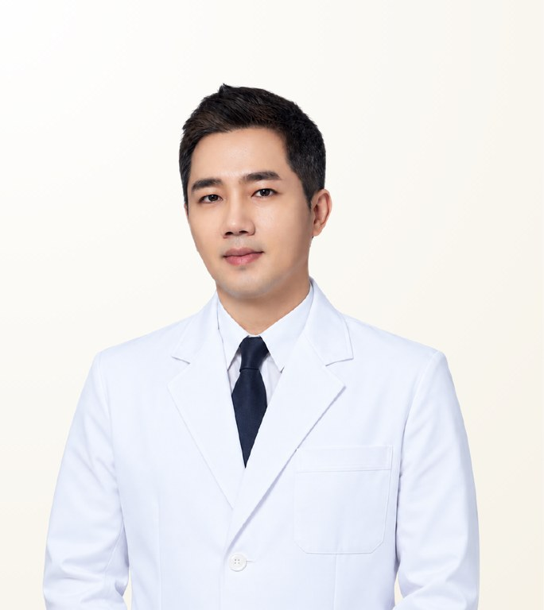

Reviewed by STMSTYLE
Lee Hobin
อี โฮบิน · 이호빈
BT Plastic Surgery · Board-certified Plastic Surgeon
- Personalised Three-Part Contouring
- High-L 3D Zygoma Reduction
- Revision Facial Contouring
- Experience
- 15+ years in practice
- Clinical experience
- Extensive clinical experience over 15+ years, with many documented before-and-after cases and patient reviews in three-part contouring, zygoma reduction and facial liposuction
- Recommended Stay
- Eight days and seven nights as standard; for three-part contouring, one to two weeks is recommended according to post-operative condition
About the Doctor
Dr. Lee Hobin is a board-certified plastic surgeon and director at BT Plastic Surgery in Seoul, known for personalised three-part contouring, High-L 3D zygoma reduction and revision facial contouring. Using 3D CT, he analyses bone, muscle, fat, skin and salivary glands to reduce facial width while preserving anterior cheekbone projection, and builds the prevention of post-operative sagging into the surgical plan.
Case Expertise
Personalised Three-Part Contouring
The cheekbone, mandible angle and chin are designed within a single plan. Rather than reducing each area to the maximum, how much to adjust each is decided from the facial proportion confirmed on 3D CT, with the final position of the soft tissue calculated alongside.
High-L 3D Zygoma Reduction
A High-L osteotomy including the most prominent MMP and the 45-degree zygoma is followed by inward rotation, with the osteotomy fixed at three points with titanium plates and screws for stability. Where osteotomy is unnecessary, cortical reduction or shaving is chosen.
Revision Facial Contouring
Corrects asymmetry, insufficient or excessive osteotomy, and nonunion remaining after previous contouring surgery. The earlier osteotomy, bone condition, function and balance are reassessed on 3D CT before the extent of revision is set.
Other treatments available
Materials & Equipment
Video
Q&A video with the doctorAsk our team on LINE for more informationPhilosophy of Care
His view is that facial contouring does not begin with reducing a lot of bone but with distinguishing precisely why a face appears wide and flat. Using 3D CT, he examines not only bone thickness and the nerve line but also muscle, fat, skin, salivary glands and soft-tissue condition, then selects only the extent and method required among the zygoma, mandible angle and chin. The lateral cheekbone is reduced while anterior projection is preserved, and stable fixation of the osteotomy together with soft-tissue and muscle fixation to reduce sagging is designed in, for a natural facial balance that lasts.
— Lee Hobin
STMSTYLE Assessment
STMSTYLE regards Dr. Lee Hobin not as a surgeon who simply makes faces smaller, but as a contouring specialist who diagnoses why a face looks wide and heavy by separating bone, muscle, fat, skin and salivary glands. He reduces the lateral cheekbone while preserving anterior projection, fixes the osteotomy at three points for stability, and includes post-operative sagging in the soft-tissue fixation plan. STMSTYLE considers him first for patients who want a face that looks small, dimensional and natural from every angle.
STMSTYLECareer & Training
View full background
Education
- Doctoral coursework completed, Seoul National University College of Medicine
Licences & certification
- Board-certified Plastic Surgeon (Korea)
Career
- Representative Director, BT Plastic Surgery
- Clinical Fellow, Department of Plastic Surgery, Seoul National University Bundang Hospital
- Former Director, View Plastic Surgery
- Former Director, DA Plastic Surgery
Professional memberships
- Full member, Korean Society of Plastic and Reconstructive Surgeons
- Full member, Korean Society for Aesthetic Plastic Surgery
- Full member, Korean Cleft Palate-Craniofacial Association
- Full member, International Society of Aesthetic Plastic Surgery (ISAPS)
Frequently Asked Questions
Is Dr. Lee Hobin good at zygoma (cheekbone) reduction?
Yes. Dr. Lee Hobin is known for High-L 3D zygoma reduction, an osteotomy that includes the MMP and the 45-degree zygoma, followed by inward rotation and triple titanium fixation to reduce width while preserving anterior projection. Where osteotomy is unnecessary, he chooses cortical reduction or shaving instead.
Does Dr. Lee Hobin perform revision facial contouring?
Yes. Dr. Lee Hobin corrects asymmetry, insufficient or excessive osteotomy and nonunion from previous contouring surgery, reassessing bone condition, function and balance on 3D CT before planning. The final plan is set at an in-person consultation.
What kind of patients is Dr. Lee Hobin best suited for?
Dr. Lee Hobin suits patients who want a face that looks small, dimensional and natural from every angle rather than heavily reduced, including those concerned about sagging after contouring, since he plans soft-tissue and muscle fixation into the surgery.
How long should I stay in Korea for three-part contouring with Dr. Lee Hobin?
The standard stay for surgery with Dr. Lee Hobin is eight days and seven nights; for three-part contouring, one to two weeks is recommended according to post-operative condition.
Does Dr. Lee Hobin operate personally, and can I consult through STMSTYLE?
Dr. Lee Hobin performs the surgery personally. STMSTYLE works with BT Plastic Surgery and coordinates initial consultations, scheduling and conditions with the hospital from Bangkok. Final decisions are made at an in-person consultation.
Sources
View sources and review record
| Item | Source | Checked |
|---|---|---|
| Board certification, education, training and society memberships | BT Plastic Surgery official medical team page | 2026-09-08 |
| Contouring techniques, 3D CT and triple fixation | BT Plastic Surgery official procedure pages | 2026-09-08 |
| Published research | Lee HB et al., J Korean Soc Plast Reconstr Surg 2010;37(4):361-368 | 2026-09-08 |
| Before-and-after cases and patient reviews | STMSTYLE direct review of consented case material, in-person meetings and patient coordination | 2026-09-08 |
Review record · 2026-09-08
STMSTYLE reviewed Dr. Lee Hobin's profile through long-term collaboration, in-person meetings and consultations, patient coordination and cross-checking against his official profile, procedure pages and before-and-after case material.